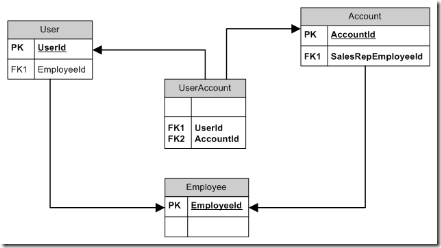

|
|
Archive for the ‘dof’ Category
Monday, October 4th, 2010
Observe the difference between these two requirements:
When the user closes the lid, the laptop goes to sleep.
Versus
When the lid is closed, the laptop is asleep.
It is the same as the difference between these two implementations:
public class LaptopPowerManagerEventDriven
{
private bool _sleeping = false;
public LaptopPowerManagerEventDriven(LaptopLid lid)
{
lid.Closed += () => _sleeping = true;
lid.Opened += () => _sleeping = false;
}
public bool Sleeping
{
get { return _sleeping; }
}
}
Versus
public class LaptopPowerManagerDependencyDriven
{
private LaptopLid _lid;
public LaptopPowerManagerDependencyDriven(LaptopLid lid)
{
_lid = lid;
}
public bool IsSleeping
{
get { return _lid.IsClosed; }
}
}
I don’t have any inside information regarding how OS X or Windows implement power management, but I can guess which one uses which approach.
Posted in dof | No Comments »
Sunday, March 21st, 2010
I will be speaking at the Dallas XAML user’s group on May 4. I’ll guide the group through the creation of a simple MVVM application to demonstrate why you want to use the pattern. This is a hands-on format, so bring your laptop. We will be using Visual Studio 2008 and WPF, so no special downloads will be required.
In preparing for this presentation, I’ve researched much of the MVVM advice currently available. Here are just some of the sources that I’ve found:
In almost every example, the presenter copies data from their Model into the View Model. Some don’t even have a Model at all! I, on the other hand, create pass-through View Models. My View Models don’t store any data. So either I’m doing it wrong, or my idea of MVVM is different from everybody else’s. Before I present the pattern to a room full of people with laptops, I’d like to know which.
Disconnected View Model
The typical example of a View Model example keeps a copy of its data. The properties work against local fields.
public class PersonViewModel : INotifyPropertyChanged
{
public event PropertyChangedEventHandler PropertyChanged;
private string _firstName;
private string _lastName;
public string FirstName
{
get
{
return _firstName;
}
set
{
_firstName = value;
FirePropetyChanged("FirstName");
FirePropetyChanged("FullName");
}
}
public string LastName
{
get
{
return _lastName;
}
set
{
_lastName = value;
FirePropetyChanged("LastName");
FirePropetyChanged("FullName");
}
}
public string FullName
{
get
{
return string.Format("{1}, {0}", _firstName, _lastName);
}
}
private void FirePropetyChanged(string propertyName)
{
if (PropertyChanged != null)
PropertyChanged(this, new PropertyChangedEventArgs(propertyName));
}
}
Before you display the view, you have to copy the data into the view model. At some point later, you copy the data back out of the view model.
public class PersonViewModel
//...
public static PersonViewModel FromPerson(Person person)
{
return new PersonViewModel()
{
FirstName = person.FirstName,
LastName = person.LastName
};
}
public void ToPerson(Person person)
{
person.FirstName = _firstName;
person.LastName = _lastName;
}
}
Some of the experts just skip the model class altogether and go straight from their view model to the database or service.
Pass Through View Model
I prefer the pass through style. The view model stores no data.
public class PersonViewModel : INotifyPropertyChanged
{
public event PropertyChangedEventHandler PropertyChanged;
private Person _person;
public PersonViewModel(Person person)
{
_person = person;
}
public string FirstName
{
get
{
return _person.FirstName;
}
set
{
_person.FirstName = value;
FirePropetyChanged("FirstName");
FirePropetyChanged("FullName");
}
}
public string LastName
{
get
{
return _person.LastName;
}
set
{
_person.LastName = value;
FirePropetyChanged("LastName");
FirePropetyChanged("FullName");
}
}
public string FullName
{
get
{
return string.Format("{1}, {0}", _person.FirstName, _person.LastName);
}
}
private void FirePropetyChanged(string propertyName)
{
if (PropertyChanged!= null)
PropertyChanged(this, new PropertyChangedEventArgs(propertyName));
}
}
Instead of storing a copy of the Person data, this view model uses the storage that is in the actual Person model. There is no back-and-forth copying of data.
The advantages of pass through
I prefer the pass through style because it limits the number of moving parts in the application; in other words, it minimizes the “degrees of freedom”. Fewer moving parts means:
- Less code
- Fewer tests
- Fewer things that could break
- Simpler communication
If data exists in two places, then it will diverge. Data in one place will be more up-to-date than data in the other place. You have to write code to manage the divergence. That code needs to be tested. That code could break.
Many of the MVVM frameworks that the experts use have a mechanism for sending messages from one view model to another. This is necessary because each view model has its own copy of the data. But if each view model passes through to the same model object, then message passing is no longer necessary. The data model itself becomes the means of communication between view models.
The disadvantages of pass through
There is a trade-off between the disconnected and pass through styles. The pass through style does have some disadvantages:
- Harder to support Cancel
- Requires change notification from model
- Difficult to represent complex transformations
Some applications call for the modal dialog OK/Cancel metaphor. It is easier to implement this metaphor if you copy the data into a disconnected view model. If the user presses cancel, you just don’t copy the data back to the model.
While view models can use the data model to share data, they need to be notified of changes that other view models are making. That means that your view models not only implement INotifyPropertyChanged, they also subscribe to it. This can lead to a lot of bookkeeping code. Fortunately, there is a solution to this, but you have to use a third-party library.
Some transformations cannot be easily represented as a pass through. Maybe the objects in the data model need to be combined or regrouped in different ways. This regrouping cannot be easily done with pass through properties. A disconnected view model can make large scale transformations during the copying process.
None of the experts that I’ve studied make a distinction between disconnected view models and pass through view models. This is unfortunate, because the differences are significant. Where the advantages of a pass through view model outweigh the disadvantages, I find it to be an excellent choice. But before you can make that choice, you have to know that there is a choice to be made.
Posted in Update Controls, dof | 2 Comments »
Tuesday, September 1st, 2009
In Q.E.D. Hour, we will be proving things about our code. To get the group started in thinking about proof, I assigned some homework. It has to do with a watch.
The mechanism inside of a wristwatch is known as a movement. It has many moving parts, but all of those parts work together in unison. It measures only one thing. It has only one degree of freedom.
The secret to why the movement works is not in the parts. It is in the connections between the parts, where a connection is the point at which two moving parts touch. Which brings us to our proof.
Given: A movement with 20 moving parts having one degree of freedom.
Prove: There are ___ connections among those parts.
Fill in the blank. I'm sure you already know the answer. But the challenge is to prove it. This is representative of the types of proofs that we will write in Q.E.D. Hour.
Posted in dof, qed | No Comments »
Tuesday, May 26th, 2009
I just requested a change to a use case that will save the project two man-weeks.
eCommerce users and accounts
In the ABSG eCommerce system, a user shops on behalf of an account. Some users can shop on behalf of more than one account, so they get to choose at the beginning of their shopping experience. We populate their list of choices from all of the accounts to which they have access.
Employees of ABSG log on to the eCommerce system to help people. Some of these employees are sales representatives for certain accounts. Every account as one sales rep.
Not all users are employees, and not all employees are users. We enter an employee ID in the user profile to relate the two.
The UserAccount table
 We have an associative table that relates users with the accounts that they have access to. This is the table that we use to present the list of choices at the beginning of the user's shopping experience.
I'm sure at one point the BA asked me how a user is granted access to an account. I told her about the UserAccount table. It was probably that conversation that led to the Automatic Account Access use case.
Automatic account access
Use case 1019: Automatic Account Access stated that the system shall periodically check for changes:
- An account is created or deleted.
- A user is created or deleted.
- The sales representative for an account is changed to a different employee.
- The employee ID of a user is changed.
When one of these changes happens, it will:
- Identify the sales rep user for each affected account.
- If there is no existing UserAccount record for that sales rep, insert it.
- If there is an existing UserAccount record for a prior sales rep, delete it.
This to be accomplished via an impressive combination of replication, triggers, and cursors.
The problems
There are a number of problems with this approach.
- It would take a DBA a couple of weeks to build and test it.
- Testing cannot be easily automated.
- It has too many moving parts (a.k.a. degrees of freedom), each one of which would have to be monitored.
- It is difficult to determine whether a UserAccount record was created automatically or intentionally. We could either delete UserAccount records that a human created, or fail to delete UserAccount records that a program created.
- It does not take effect immediately. People could be diagnosing a failure of the system, only to learn that the process hasn't yet run.
These are all symptomatic problems. Each one could be addressed individually. But here are the two big systemic problems:
- The use case dictated a solution.
- The solution treated dependent behavior as independent behavior.
Here's my solution
Use case 1019 has been deleted, and replaced with a single business rule in use case 1020: User Account Selection. This rule reads "A user may select any account for which their employee ID matches the accounts sales representative employee ID." No mention of how this is accomplished. That solves one problem.
To solve the other, we simply change the query that fetches the list of accounts at the beginning of the shopping experience. Instead of just getting UserAccount records, we also include accounts where account.SalesRepEmployeeID = user.EmployeeID. One small change to a query, instead of a rats nest of triggers.
The basic flaw in the Rube Goldberg reasoning that produced the original design was that it treated dependent behavior (which accounts the user could select) as independent behavior (UserAccount records). Changes to independent behavior (INSERTs, UPDATEs, and DELETEs) are permanent. Changes to dependent behavior (SELECTs) are not. It is therefore harder to code, test, monitor, and troubleshoot independent behavior. It is easier to do all of those things with dependent behavior.
Records are independent. Queries are dependent. Never use independent behavior when dependent behavior is sufficient.
Posted in Databases, dof | No Comments »
Sunday, April 19th, 2009
Jimmy Bogard created AutoMapper to generate left-hand-right-hand code. This is the mapping code that often appears when you are translating one object model to another parallel object model. He gives the example of mapping a data model to a view model:
public class OrderToOrderViewModelMapper
{
public OrderViewModel Map(Order order)
{
return new OrderViewModel
{
CustomerFullName = order.Customer.GetFullName(),
Total = order.GetTotal(),
LineItems = order.GetLineItems()
.Select(x => new OrderLineItemViewModel
{
Price = x.Price,
Quantity = x.Quantity,
Total = x.GetTotal(),
ProductName = x.Product.Name
})
.ToArray()
};
}
}
This misses the point. The problem is not in the tedious mapping code. The problem is that you are doubling the amount of independent data.
Let me start at the beginning. This is a field:
public class Customer
{
private string _fullName;
}
This field is independent data. It can change independent of anything else in the system.
This is a property:
public class Customer
{
private string _fullName;
public string FullName
{
get { return _fullName; }
set { _fullName = value; }
}
}
This property is dependent data. Its behavior depends entirely on the field.
This is an immutable field:
public class OrderViewModel
{
private Order _order;
public OrderViewModel(Order order)
{
_order = order;
}
}
This immutable field is not independent. It cannot be changed. It is immutable.
This is another property:
public class OrderViewModel
{
private Order _order;
public OrderViewModel(Order order)
{
_order = order;
}
public string CustomerFullName
{
get { return _order.Customer.FullName; }
}
}
Adding independent data to a system increases its degrees of freedom. Adding dependent data does not. Adding an immutable field does not.
You want no more degrees of freedom in the system than the problem calls for. Degrees of freedom are moving parts. Moving parts break. Moving parts need to be tested. You should therefore avoid adding independent data when dependent data is sufficient.
The problem with Jimmy Bogard's example wasn't the code to copy data from one object to another. It was that data had to be copied at all. The view model should not have fields (independent data). It should have properties (dependent data).
Posted in Patterns, dof | 4 Comments »
Sunday, March 1st, 2009
Inspired by Euclid's Elements. Software as a mathematical description of behavior.
Identity
An object is that which has identity. Identity implies consistent behavior.
Interface
An interface is the means by which an object exposes its consistent behavior. Interface implies identity.
Ownership
Every object except for a singleton has one and only one owner. Ownership cannot be transferred.
Dependency
Behavior is either independent or dependent. Independent behavior can be changed by acting upon the object, while dependent behavior represents an objects reaction to other dependent or independent behavior.
Transaction
All changes to independent behavior occur within the scope of a transaction. All behaviors dependent upon those changes are simultaneously visible. There exists a partial order among transactions, whereby one transaction could be said to be a prerequisite of another.
Posted in dof | 4 Comments »
Wednesday, October 15th, 2008
An object has two kinds of data: dependent and independent. Independent data can be changed at any time by a user action. Dependent data is derived from other data in the system.
For example, a Person object has three properties: FirstName, LastName, and FullName. The user can directly set the first and last name, but the full name is derived. The user has no direct control over the full name. She can only influence it by changing the first or last name.
Sometimes it's hard to see the difference between dependent and independent data. Both kinds of data change in response to a user action. The key question is not "when does it change", but rather "what determines its value".
The UI might allow the user to enter a full name. When she types a new value, the UI parses the text she enters and determines the first and last names. It sets these two independent properties, and then calculates the full name. If the user entered well-formed input, the calculated output will be exactly the same. If not, the system will have "fixed" her mistakes (extra spaces, inconsistent formatting, etc.)
The number of independent properties is exactly equal to the number of degrees of freedom that an object has. Ideally, independent properties are unconstrained. Constraints are codified in the dependent properties.
Keep the data flowing
There are several strategies for updating dependent data. The most straight forward strategy is to recalculate dependent properties directly when an independent property is changed. I could code my person object to set the full name every time the first or last name is changed. This solution is easy to code, but breaks down quickly. For example, when I import a person from a CSV file, the importer writes both the first and last names. My naive implementation would calculate the full name twice.
Another strategy is to keep a marker for dependent data that is out-of-date. When the independent data changes, set the marker. When someone asks for the dependent data, check the marker. This postpones the update and therefore avoids redundancy.
When dependent data in one object relies upon independent data in another, things get even more interesting. If you take the direct approach of notifying the dependent object from the independent one, you end up with tightly coupled objects. The observer pattern breaks that coupling. There are several other patterns that offer benefits over observer (including my own) that are too numerous to list here.
Now add to the mix the fact that dependent data may rely on other dependent data. So a change to an independent property should result in the update of all of its direct and indirect dependencies. This could be accomplished through cascading notifications, whereby the direct dependent upon receipt of notice turns around and notifies the indirect dependent. But to avoid potential redundancy or cycles, this is more often handled through dependency analysis. That is certainly too deep for this post.
Ebb and flow
No matter which strategy you use to update dependent properties, these two types of data create an ebb and flow within a system. A user action directly changes one or more independent properties. Those changes flow back toward the user in the form of dependent properties.
My synchronization framework starts with this fundamental concept. All object behavior is either dependent or independent.
Posted in Synchronization, dof | No Comments »
Tuesday, April 1st, 2008
Regarding the automotive wireless system that I am currently working on, we are having a discussion about feed reconciliation. It breaks down into two camps: validate everything and reject out-of-order feeds, or accept everything and sort it out later.
In this system, the manufacturer of the wireless device identifies the unit by MEID. They obtain some phone numbers (MDN and MIN) and pair them to the device. They then ship the device to the automaker, who installs it in a vehicle (identified by VIN). Once we have MEID, MDN, MIN, and VIN, we can create an account.
This scenario can be represented with an Entity Fact Diagram. My understanding of the system has changed since this original post, so the diagram is different. A subset of the new diagram follows:
 We receive a feed for the pairing of MDN/MIN with MEID. We then receive a feed for the shipment. Finally, we receive a feed from the automaker for the installation of the MEID in a VIN. The installation feed does not include the phone numbers, so we have to have both Pairing and Installation before we create an account. We receive a feed for the pairing of MDN/MIN with MEID. We then receive a feed for the shipment. Finally, we receive a feed from the automaker for the installation of the MEID in a VIN. The installation feed does not include the phone numbers, so we have to have both Pairing and Installation before we create an account.
The argument is what to do when we've received an Installation record for an MEID that we haven't seen in the Pairing feed. It shouldn't happen, because it takes days for the device to be shipped, received, and installed. Nevertheless, it could happen and probably will.
So the validate everything camp wants to reject Installation records for which Shipment has not been received, and Shipment for which Pairing has not been received. Getting things out of order is indicative of a problem in the overall business process, and should be flagged as early as possible.
Meanwhile, the accept everything camp wants to gather and store all of this input, then run reports to reveal problems. Aging reports will show when things move forward too slowly, and exception reports will show when things skip steps. You still get the feedback, but it stays a business problem and doesn't become a system problem.
Here's my solution
The entity fact diagram shows me a hybrid solution. As illustrated, the Pairing feed is a prerequisite of the Shipment feed. The arrow between them has two consequences: first, the Shipment has to have enough information to identify the Pairing. Second, the Shipment cannot exist without the Pairing. This second consequence is of particular importance.
The Pairing and Shipment feeds are from the same source, as indicated by color. These are completely automated feeds produced by a database at the wireless device factory. If we see a Shipment without a Pairing, then it truly is a system problem.
The Installation feed, however, comes from a different source. We have to be more lenient with the relative timing between different sources. If, for example, we are on Einstein's train moving near the speed of light away from the manufacturer toward the automaker, we will see the Installation lightning strike in front of us before the Pairing strikes behind us. Sure, it seems crazy, but in enterprise software these things happen.
Posted in dof | No Comments »
Wednesday, February 20th, 2008
Each time I delve into the HTML/CSS world, I am reminded of why I love the Algol-derived languages.
Algol was the ancestor of modern imperative languages like C# and Java. It introduced the concepts of orthogonality and composability to computer language design. Orthogonality is the property of a construct that means it does not intersect with others. There is just one way to express any single idea. Composability is the property of constructs that they can be combined to express larger ideas.
Java is an excellent example of an orthogonal, composable language. Classes, methods, statements, and expressions are all different things (orthogonal). If you want to describe a type of object, you use a class. If you want to describe behavior, it's a method. Through composition, you can describe more complex ideas, like the behaviors of types (class + methods), anonymous types (class + expression), and loops (statement + expressions).
C# relaxes the ideas just a little. For example, a delegate is both a type (class) and a behavior (method). Properties look like members, but act like methods. Since these language constructs serve dual purposes, there is sometimes more than one way to express a simple idea. This was done in the name of convenience, at the expense of language purity.
HTML and CSS
Contrast this with the two ubiquitous languages of the web.
HTML is composable, since you nest elements to construct pages. But these constructs are not orthogonal. An image, for example, could be represented either by an <img> tag or by a <div> with a background-image style. HTML lack of orthogonality is due mainly in part to legacy, as CSS obsoletes elements like <b>.
CSS lacks both composability and orthogonality. Cascading is a limited set of rules, not a true composition mechanism. And several of the attributes interact such that you cannot control one without influencing another.
The "Ken Burns" effect
For example, I am currently implementing the "Ken Burns" effect in Javascript. Images zoom, pan, and fade into one another. Yes, this would be better done in Silverlight or Flash (both highly composable and orthogonal, by the way). But I'd like a solution that requires no plug-in. And having had success with cover flow, I thought I would give it a try.
For the effect, I need to fade from one image to another. So the two images must overlap. In addition, I need to pan and zoom within the frame. This requires that I crop the images. CSS has constructs for both. Unfortunately, they interact.
There are two interrelated concepts at play in the placement of elements on a CSS-based web page: location and layout. Location is the placement of an element itself, whereas layout determines how an element affects the placement of other elements around it.
Position and overflow
The position attribute in CSS affects both placement and layout. The default position is "static", which means that it is entirely under the control of layout. To move an element, you usually set the position to "absolute". This not only gives you control of its position, but also takes it out of the layout equation. For panning, you set position to "absolute".
Now to get the clipping working. We can put the images inside a <div> to define the clip region. Setting overflow of the <div> to "hidden" causes all child objects that fall outside its borders to be cropped.
Unfortunately, for reasons I have yet to comprehend, "overflow: hidden" does not affect child elements with "position: absolute". One attribute controls clipping, while the other controls placement. They should be orthogonal, but they are not.
To solve this problem, I have to select a strange value for position. The position "relative" is properly clipped. However, it combines the ideas of location and layout. Relative positioning is not relative to the containing <div>, as you might expect. Instead, it is relative to the object's resting place as determined by layout. To further confuse the issue, layout proceeds around the object as if it was not moved.
Since I have two images inside the <div> - one fading into the other - the layout of the second is going to depend upon the size of the first. I have to do some extra math based on the size of the first image to adjust the placement of the second. Furthermore, when I switch to a new image, I need to quickly readjust that compensation. I haven't yet determined how to accomplish this without causing some kind of flicker.
Because the CSS attributes are non-orthogonal, I have to solve a multi-variable problem to determine which CSS properties to use to express any given idea. Maybe a plug-in is not so bad.
Posted in CSS, dof | No Comments »
Wednesday, December 5th, 2007
There is one pattern for using definitive behavior that I failed to mention in the previous post. This is perhaps the most important of them all, so it deserves special treatment.
Historic modeling is quite simply storing a history of actions, not the current state of a system. The current state is mutable, whereas history is fixed. Once something has been done, it cannot be undone, and it cannot be changed. A history is an ever growing log of permanent records.
One example of historic modeling from the real world is a chess game. The position of the board changes regularly during the course of a game. The position is dynamic. Yet the record of moves does not change. Once a move is made, it cannot be taken back or changed.
Another example is a checkbook register. The current balance can change over time, but the history of checks, once written, never changes.
Advantages of historic modeling
History is sufficient. Given a history of a system, it is trivial to go back to any point in time to construct it's state. If you have a record of chess moves, you just make each move in turn to produce the board position at every point in the game. If you have a ledger of checks, you can just add up the amounts including the opening balance up to a certain point in time. The current state doesn't contain enough information to reconstruct the history, but the history is sufficient to reconstruct the current state.
History is atomic. Each action in the history has happened. Actions not yet in the history have not. There is no middle ground. This is why banks keep ledgers of account transfers, rather than trying to decrement one account balance and increment another. Balance, being state, is not atomic.
History is consistent. Two people comparing notes can easily disagree on the current state of a system. To come to an agreement, they must compare histories. That's why the bank sends you a list of transactions at the end of each month, rather than just your account balance. That's the only way to reconcile your version of the truth with your bank's. Eventually, all parties will come to agree on the same version of history.
History is transparent. Logging and auditing systems exist to help us trace anomalies to their source. Without them, all we could do is look at the current state and wonder if it is correct. It is relatively easy to hide money in a series of accounts; but if you must produce an accurate history of transactions, each one can be called into question.
History as definitive behavior
So what does historic modeling have to do with definitive behavior? After all, history is always growing, while definitive behavior is something that doesn't change during the life of an object.
While the history of a given system changes, each event in history is constant. Once it is added to history, it cannot be changed. The behavior of the event is definitive, even if the history of events is dynamic.
The effect of an event might change over time. For example, you might think you have enough in your account to write that check, only to learn later that your spouse made a withdrawal beforehand. In your original history, that check left a positive balance in the account. But after learning about other events, you discover that the check left you overdrawn. Still, that doesn't change the fact that the check was written for a certain amount.
History in practice
By the above discussion, a historic model is a database that allows inserts, but no updates or deletes. Every time you need to make a change, you insert the appropriate type of record. To determine the current state of the system, you need to query the aggregate of history.
This is obviously impractical. Such a database would grow without bounds. The aggregate queries would get slower over time and eventually make the system unusable. We need one more observation to make it all work.
A system is historic if it appears to be so, whether it actually works as advertised. This observation allows for optimizations like caching, archiving, and pruning. As long as there is some level of abstraction at which you cannot see that the optimization is taking place (without using a stopwatch), then you can still claim to have a historic model. Future posts will discuss these optimizations in detail.
Posted in Historic Modeling, Patterns, dof | 1 Comment »
|

{kind=link}